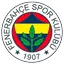

Armaların
Oynadıkça forma koleksiyonuna yeni armalar dikilir. İstatistiklerin bu tarayıcıda saklanır.
İstatistikler
Her oyunda kaç kez oynadın ve ne kadarını çözdün.
Zincir
- Oynandı
- 24
- Çözüldü
- 19
- En kısa
- 2 adım
Kariyer yolu
- Oynandı
- 15
- Bulundu
- 6
- Ort. ipucu
- 3,2
Kadroyu tamamla
- Oynandı
- 9
- Tam 11
- 4
- Ort. yanlış
- 2,1
Maç quiz'i
- Oynandı
- 31
- Bilindi
- 22
- Ort. puan
- 3,4
Armalar 9 armadan 5'i dikildi
Kilitli armalar sadece dikiş izi olarak görünür. Altındaki çizgi ne kadar kaldığını gösterir.
-
İlk halkaİlk zincirini tamamla.3 Kasım'da dikildi
-
KestirmeBir zinciri en kısa yoldan çöz.12 Kasım'da dikildi
-


Derbi gecesiBir Galatasaray–Fenerbahçe maçını quiz'de bil.20 Kasım'da dikildi
-
Avrupa gecesiBir Şampiyonlar Ligi eleme maçını bil.22 Kasım'da dikildi
-
3
Üç gün üst üste3 gün seri yap.Bugün dikildi
-
7
Tam hafta7 gün seri yap.
-
11
Eksiksiz 11Bir kadroyu hiç ipucu almadan tamamla.
-
İz sürücü10 kariyer yolu bul.
-
Altı ligAltı ligin hepsinden oyuncuyla bir zincir kur.